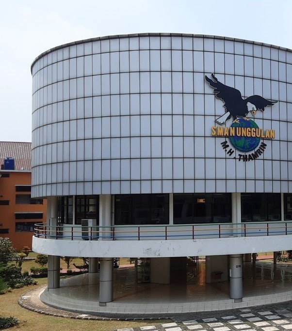
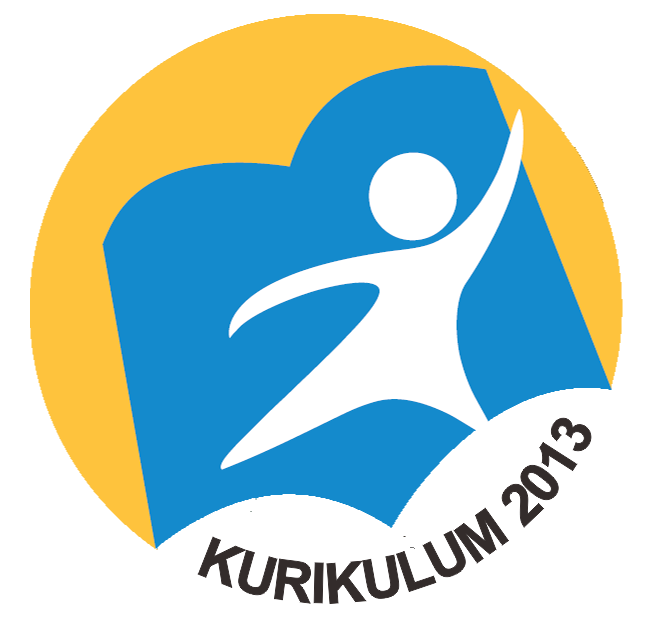

SMAN Unggulan M. H. Thamrin
SMAN Unggulan M. H. Thamrin adalah sekolah sains yang berkomitmen untuk memberikan pendidikan berkualitas bagi peserta didik yang memiliki potensi dan kecerdasan istimewa, terutama di bidang sains. Oleh karena itu, sekolah ini mengaplikasikan tiga kurikulum: Nasional, Cambridge, dan Olimpiade.
Sekolah ini menghasilkan peserta didik yang memiliki prestasi di berbagai bidang, sehingga lulusan-lulusan SMAN Unggulan M.H. Thamrin sekarang sudah berada di universitas-universitas penjuru dunia, seperti Oxford, UCLA, NTU, NUS, dll.
